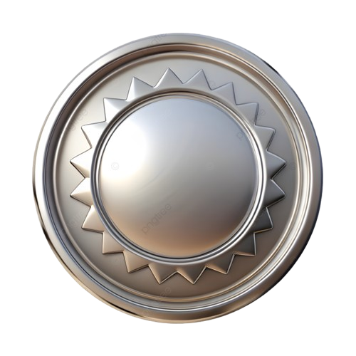
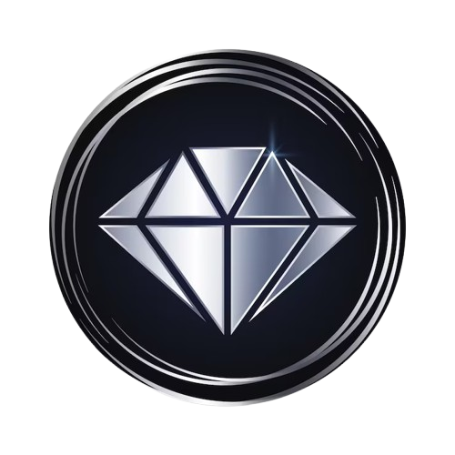
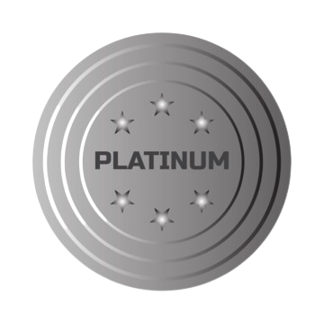

Enatist är en strukturerad kunskapscommunity där medlemmar ställer frågor, Enatister delar expertis, och organisationer styr ekosystemet. Genom diskussioner, bidrag och gemenskapsdeltagande växer kunskapen och bidragsgivare erkänns.
Enatist är byggt som ett strukturerat kunskapsekosystem där olika roller samarbetar för att skapa meningsfulla diskussioner och insikter.
Medlemmar deltar genom att ställa frågor, dela erfarenheter och bidra till diskussioner. Enatister bidrar med djupare kunskap och insikter. Organisationer hanterar plattformens struktur, moderering och gemenskapsutveckling.
Systemet belönar aktivt deltagande genom bidragspoäng, rankningsprogression och gemenskapss.
Medlemmar och Enatister kan skapa diskussionstrådar för att ställa frågor, dela insikter eller utforska idéer. Trådar utgör kärnan i kunskapsutbytet på plattformen.
Diskussioner organiseras i strukturerade kategorier som filosofi, kunskap, erfarenheter och inlärningsämnen. Detta gör det enklare att hitta och följa samtal.
Användare kan gilla inlägg, kommentera, svara på diskussioner och interagera med andra bidragsgivare för att bygga samarbetsinriktade samtal.
Organisationsledningen hanterar plattformens ekosystem, säkerställer kvalitetsdiskussioner och introducerar gemenskapsinitiativ och evenemang.
Medlemmar tjänar s baserat på antalet diskussionstrådar de skapar. Dessa s representerar nivån av bidrag en medlem har gjort till communityn.
| Totalt antal inlägg | Erkännandepoäng | |
|---|---|---|
| 0 – 9 inlägg | Brons | 5 poäng |
| 10 – 24 inlägg | Silver | 10 poäng |
| 25 – 49 inlägg | Guld | 20 poäng |
| 50 – 99 inlägg | Diamant | Elitbidragsgivare |
| 100+ inlägg | Platinum | Topp community-bidragsgivare |
När medlemmar skapar fler inlägg och hjälper andra genom diskussioner, uppgraderas deras -nivå automatiskt i systemet.
Enatist-communityn erkänner aktiva bidragsgivare genom ett -system baserat på antalet diskussionstrådar en medlem skapar. När medlemmar delar kunskap och deltar i samtal uppgraderas deras -nivå automatiskt.
Tilldelas nya bidragsgivare som har skapat 0 – 9 inlägg i communityn.

Förtjänas av medlemmar som har skapat 10 – 24 inlägg och aktivt deltar i diskussioner.
Ges till engagerade medlemmar som har skapat 25 – 49 inlägg och bidrar med värdefulla insikter.

Erkänner mycket aktiva bidragsgivare med 50 – 99 inlägg i communityn.

Den högsta n som tilldelas elitmedlemmar som har skapat 100+ inlägg och betydande stödjer communityn.
Enatist-communityn använder ett strukturerat rankningssystem för att erkänna aktiva bidragsgivare. Medlemmar tjänar s baserat på antalet diskussionsinlägg de skapar. Varje ger bidragspoäng.
När medlemmar publicerar fler inlägg låser de upp högre s som ger högre bidragspoäng. De totala bidragspoängen avgör en medlems position i community-rankningen.
| Inlägg | Bidragspoäng | |
|---|---|---|
| 0 – 9 inlägg | Brons | 5 poäng |
| 10 – 24 inlägg | Silver | 10 poäng |
| 25 – 49 inlägg | Guld | 20 poäng |
| 50 – 99 inlägg | Diamant | 25 poäng |
| 100+ inlägg | Platinum | 35 poäng |
Plattformen beräknar automatiskt bidragspoäng och visar en community-leaderboard. Medlemmar med högre poäng visas högre upp i rankningen.
Medlemmen med högst bidragspoäng innehar Rank #1-positionen i communityn.
Diskussioner fokuserade på lärande, förståelse och delning av information inom olika ämnen.
Medlemmar delar personliga berättelser, resor och lärdomar från verkliga erfarenheter.
En plats för öppna samtal där medlemmar utbyter perspektiv och utforskar begrepp.
Officiella uppdateringar, tillkännagivanden och vägledning från organisationsledningen.
Enatist-plattformen styrs av tydliga gemenskapsstandarder. Organisationsledning och moderatorer säkerställer respektfulla diskussioner, transparent styrning och en säker miljö för meningsfulla samtal och samarbete.